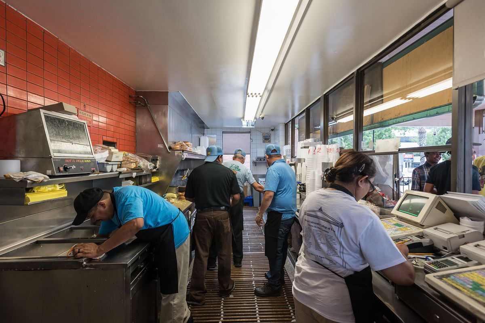
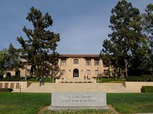

Carlos Sosa
In the vibrant tapestry of my life, I emerge as a beacon of determination and ambition. My name is Carlos Sosa, and I am a first-generation Mexican American breaking the mold as the first in my family to embark on the transformative journey of higher education. Born into a lineage deeply rooted in Mexican heritage, I carry the weight of my ancestry proudly, weaving together the threads of my cultural background with the promises of a brighter future.
My story unfolds against the backdrop of the University of California, Riverside (UCR), where I am currently carving my path. As a UCR student, I navigate the academic landscape with resilience and tenacity, overcoming challenges that often accompany the transition to college life. The campus, with its diverse community and rich learning environment, provides the perfect backdrop for me to cultivate my dreams and aspirations.
Growing up in a household where the echoes of Mexican heritage resonated through every aspect of life, I developed a profound appreciation for my roots. Raised in an environment where hard work and family values were paramount, I imbibed the essence of determination and perseverance from a young age. This foundation laid the groundwork for my academic pursuits and instilled in me the drive to rise above circumstances.
Being the first in my family to attend college carries the weight of both expectation and opportunity. It is not merely a personal accomplishment; it is a triumph that reverberates through generations, setting a precedent for those who will follow in my footsteps. My journey serves as an inspiration for my siblings, cousins, and future generations, illustrating the boundless possibilities that education can unlock.
My identity as a first-generation Mexican American shapes my perspective on life and education. I cherish the cultural richness that defines me, celebrating the traditions and values passed down through generations. Simultaneously, I embrace the opportunities that education provides, recognizing it as a gateway to personal and communal advancement.
As I navigate the complexities of academia, I envision a future that extends beyond the confines of my current circumstances. My aspirations reach far and wide, fueled by the desire to break barriers and transcend limitations. I am not merely a student; I am a visionary, constantly challenging myself to reach new heights and make a meaningful impact on the world around me.
In the tapestry of my life, each thread represents a unique facet of my identity – a first-generation Mexican American, a UCR student, a trailblazer for my family, and an aspirant for greatness. As I continue to weave this intricate narrative, I am not only shaping my own destiny but also leaving an indelible mark on the broader canvas of possibility for those who share my journey. My story is a testament to the transformative power of education and the unwavering spirit of those who dare to dream beyond the confines of their beginnings.
Experience
Kappa Sigma Fraternity, Riverside
• Organized events where all members came together and had a fun, healthy time together.
• Helped organize and participate in philanthropy events.
• Took a Leadership position as brotherhood chair.
Giving 365 Thanksgiving Dinner Drive
• Responsible for setting up and handing meals to families.
• Directly responded and interacted with kids and families.
Lucky Boy|Food Runner
• Understood the workplace atitude and setting.
• Dealt with angry customers, and stubborn guests breaking the rules.
• Developed proper and professional communication skills with customers.
• Assisted co-workers with all sorts of issues in the kitchen, with service, and with prep.
Education
UC Riverside
Portfolio

